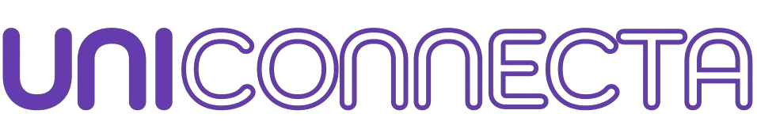

O futuro começa aqui. Não tenha medo de pedir ajuda, você não está só.
Depois desse episódio, Lucas e sua mãe conversavam à mesa, ainda abalados pelo ocorrido. Foi então que sua mãe fez um comentário que acendeu a ideia que mudaria tudo: “Bem que poderia existir um relógio que chamasse a ambulância nessas horas, né?” E assim nasceu a semente do Smart Pulse.
Durante a pandemia, muitas pessoas desenvolveram transtornos de ansiedade e pânico, muitas vezes sem saber como lidar com esses sentimentos. Ainda hoje, muitos adultos não entendem a gravidade dessas condições, acreditando ser apenas “frescura”, e acabam passando por episódios aterrorizantes sem ter com quem contar. Ficar sem apoio nesses momentos é mais comum do que se imagina, e o risco de infarto ou crises graves aumenta sem a ajuda imediata.
A ideia do Smart Pulse também veio da própria experiência de Lucas, que percebeu que muitas vezes conversar com amigos ou familiares não era uma opção viável. No entanto, escrever em seu diário ou falar consigo mesmo trazia algum alívio. Mas ele sentia falta de ser ouvido de verdade. Por isso, o projeto incorporou uma
Com o avanço da tecnologia, vimos uma oportunidade de usar nossos conhecimentos para
Nosso objetivo é simples: se o usuário estiver incapacitado durante uma crise, o Smart Pulse cuidará de alertar automaticamente um familiar ou contato de emergência. Se os batimentos cardíacos ou a pressão arterial atingirem níveis preocupantes, o relógio notificará as pessoas certas para oferecer suporte.
Para facilitar a visualização das funcionalidades, desenvolvemos um protótipo virtual do Smart Pulse, com botões clicáveis que simulam todas as funções planejadas. Utilizamos o
Com o Smart Pulse, esperamos atender as necessidades das mais diversas pessoas, não apenas aquelas com crises de pânico e ansiedade, mas também outras que necessitem de um canal seguro para comunicação. A tecnologia pode ser uma aliada poderosa para garantir que ninguém enfrente esses momentos sozinho.
Assim, com o
A Bentotec é um evento inovador que reúne estudantes, profissionais e entusiastas da tecnologia para compartilhar projetos incríveis e soluções criativas. É uma oportunidade única para mostrar o potencial dos nossos talentos e explorar novas ideias que podem transformar o futuro!
Nosso projeto, o SmartPulse, foi criado com muito empenho e dedicação para ajudar pessoas a monitorarem sua saúde emocional e física, oferecendo uma ferramenta prática e intuitiva. Agora, precisamos do seu apoio!
Se você acredita no potencial do SmartPulse, por favor, vote no nosso projeto. Seu voto faz toda a diferença e nos ajuda a seguir em frente com nossa missão.
Agradecemos imensamente pela sua atenção e apoio! Juntos, podemos alcançar grandes resultados!
Um projeto focado para ajudar pessoas com deficiência visual, programado em arduíno.
Os estudantes, de modo geral, enfrentam diversas dificuldades ao buscar informações sobre suas pretendidas faculdades, universidades e cursos. Estudar é uma etapa muito importante, mas saber o que e como estudar torna-se tão fundamental quanto o estudo em si.
Contudo, a maioria dos estudantes que se preparam para o vestibular não encontra as informações de maneira eficaz. Muitas vezes, são obrigados a ler o edital inteiro ou pesquisar em vários lugares, sem conseguir a informação desejada, devido à falta de organização dessas fontes.
Para resolver esses problemas, desenvolveu-se um aplicativo focado em oferecer informações sobre vestibulares, faculdades e universidades de forma detalhada e organizada. O objetivo é facilitar a procura por tópicos, permitindo que o futuro aluno encontre rapidamente o que precisa, sem perder horas pesquisando.
O foco do projeto é acelerar os estudos dos estudantes, oferecendo-lhes informações de maneira mais eficaz e concentrada em um único lugar.
.Agradecemos ao professor Marcelus, que sempre esteve presente para nos ajudar e orientar ao longo do projeto. Seu apoio foi essencial para o nosso desenvolvimento.
Agradecemos também ao Eduardo Balbieni, que compartilhou seu conhecimento e nos ensinou a trabalhar com Flutter, contribuindo diretamente para o avanço do nosso aplicativo.
Por fim, agradecemos aos nossos familiares e amigos, que sempre estiveram ao nosso lado, oferecendo apoio e incentivo em todos os momentos. Sem vocês, nada disso seria possível.